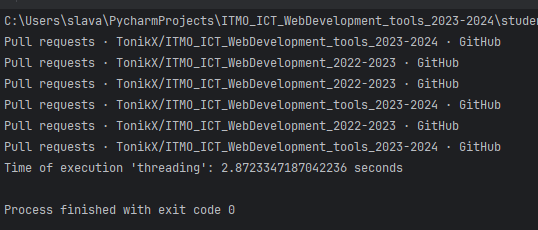

Lab 2
Подытог: создание процесса дороже создания потока, создание потока дороже создания рутины. Время выполнения в среднем у async < threading < multiprocessing.
Code + screenshots
async1.py
Создаем нужное количество (ко/го)рутин и делим 1_000_000 на их количество. Каждая единица выполнит функцию, которая суммирует все точки данного отрезка и результат добавит в лист. После выполнения суммируются результаты и выводится в консоли вместе с временем выполнения.
import asyncio
from time import time
async def calculate_sum(start, end, index):
print(f"started {index}")
s = sum(range(start, end + 1))
print(f"finished {index}")
return s
async def main(task_count):
numbers_per_task = 1_000_000 // task_count
tasks = list()
start_time = time()
for i in range(task_count):
start = i * numbers_per_task + 1
end = start + numbers_per_task - 1
tasks.append(calculate_sum(start, end, i))
results = await asyncio.gather(*tasks)
total_sum = sum(results)
end_time = time()
return total_sum, end_time - start_time
if __name__ == "__main__":
result, time = asyncio.run(main(4))
print(f"Result of execution 'async': {result}")
print(f"Time of execution 'async': {time} seconds")
multiprocessing1.py
Создаем нужное количество процессов и делим 1_000_000 на количество процессов. Каждый процесс имеет свои ресурсы, в отличие от потоков - нужно создать общий объект Queue, который хранит все суммы. Процесс выполнит функцию, которая суммирует все точки данного отрезка и результат добавит в очередь. После выполнения всех процессов суммируются результаты и выводится в консоли вместе с временем выполнения.
from multiprocessing import Process, Queue
from time import time
def calculate_sum(start, end, result, index):
print(f"started {index}")
result.put(sum(range(start, end + 1)))
print(f"finished {index}")
def main(process_count):
numbers_per_process = 1_000_000 // process_count
processes = list()
q = Queue()
start_time = time()
for i in range(process_count):
start = i * numbers_per_process + 1
end = start + numbers_per_process - 1
p = Process(target=calculate_sum, args=(start, end, q, i))
processes.append(p)
p.start()
for p in processes:
p.join()
result = 0
while not q.empty():
result += q.get()
end_time = time()
return result, end_time - start_time
if __name__ == "__main__":
result, time = main(4)
print(f"Result of execution 'multiprocessing': {result}")
print(f"Time of execution 'multiprocessing': {time} seconds")
threading1.py
Создаем нужное количество потоков и делим 1_000_000 на количество потоков. Каждый поток выполнит функцию, которая суммирует все точки данного отрезка и результат добавит в лист. После выполнения всех потоков суммируются результаты и выводится в консоли вместе с временем выполнения.
import threading
from time import time
def calculate_sum(start, end, result, index):
print(f"started {index}")
result[index] = sum(range(start, end + 1))
print(f"finished {index}")
def main(thread_count):
numbers_per_thread = 1_000_000 // thread_count
threads = list()
results = [0] * thread_count
start_time = time()
for i in range(thread_count):
start = i * numbers_per_thread + 1
end = start + numbers_per_thread - 1
t = threading.Thread(target=calculate_sum, args=(start, end, results, i))
threads.append(t)
t.start()
for t in threads:
t.join()
total_sum = sum(results)
end_time = time()
return total_sum, end_time - start_time
if __name__ == "__main__":
result, time = main(4)
print(f"Result of execution 'threading': {result}")
print(f"Time of execution 'threading': {time} seconds")
async2.py
import asyncio
import time
import aiohttp
from bs4 import BeautifulSoup
from connection import DB
from urls import URLs
async def parse_and_save_async(url, con):
try:
async with aiohttp.ClientSession(connector=aiohttp.TCPConnector(ssl=False)) as session:
async with session.get(url) as response:
page = await response.text()
soup = BeautifulSoup(page, 'html.parser')
print(soup.find('title').text) # сохранять заголовок страницы в базу данных по мне бесполезно
# т.к. нагрузки 0 полезной, поэтому вывожу в консоль
prs = soup.find_all('div',
class_='Box-row Box-row--focus-gray p-0 mt-0 js-navigation-item js-issue-row')
for pr in prs:
title = (pr.find('a',
class_='Link--primary v-align-middle no-underline h4 js-navigation-open markdown-title').
text)
span_text = pr.find('span', class_='opened-by').text.split()
date = span_text[2] + ' ' + span_text[3][:-1] + ' ' + span_text[4]
author = span_text[6]
with con.cursor() as cursor:
cursor.execute(DB.INSERT_SQL, (title, date, author))
con.commit()
except Exception as e:
print("Exception caught: ", e)
async def process_url_list_async(url_list, con):
tasks = []
for url in url_list:
task = asyncio.create_task(parse_and_save_async(url, con))
tasks.append(task)
await asyncio.gather(*tasks)
async def main():
count_for_1_thread = 2
urls_for_1_thread = [URLs[i:i + count_for_1_thread] for i in range(0, len(URLs), count_for_1_thread)]
con = DB.connect()
await asyncio.gather(*(process_url_list_async(urls, con) for urls in urls_for_1_thread))
con.close()
if __name__ == '__main__':
start_time = time.time()
asyncio.set_event_loop_policy(asyncio.WindowsSelectorEventLoopPolicy())
asyncio.run(main())
end_time = time.time()
print(f"Time of execution 'async': {end_time - start_time} seconds")
multiprocessing2.py
import multiprocessing
import time
import requests
from bs4 import BeautifulSoup
from connection import DB
from urls import URLs
def parse_and_save_multiprocessing(url):
con = DB.connect()
try:
page = requests.get(url)
soup = BeautifulSoup(page.text, 'html.parser')
print(soup.find('title').text) # сохранять заголовок страницы в базу данных по мне бесполезно
# т.к. нагрузки 0 полезной, поэтому вывожу в консоль
prs = soup.find_all('div', class_='Box-row Box-row--focus-gray p-0 mt-0 js-navigation-item js-issue-row')
for pr in prs:
title = (pr.find('a',
class_='Link--primary v-align-middle no-underline h4 js-navigation-open markdown-title').
text)
span_text = pr.find('span', class_='opened-by').text.split()
date = span_text[2] + ' ' + span_text[3][:-1] + ' ' + span_text[4]
author = span_text[6]
with con.cursor() as cursor:
cursor.execute(DB.INSERT_SQL, (title, date, author))
con.commit()
except Exception as e:
print("Exception caught: ", e)
finally:
con.close()
def process_url_list_multiprocessing(url_list):
for url in url_list:
parse_and_save_multiprocessing(url)
def main_multiprocessing():
count_for_1_thread = 2
urls_for_1_thread = [URLs[i:i + count_for_1_thread] for i in range(0, len(URLs), count_for_1_thread)]
processes = []
for urls in urls_for_1_thread:
process = multiprocessing.Process(target=process_url_list_multiprocessing, args=(urls,)) # make a tuple
processes.append(process)
process.start()
for process in processes:
process.join()
if __name__ == '__main__':
start_time = time.time()
main_multiprocessing()
end_time = time.time()
print(f"Time of execution 'multiprocessing': {end_time - start_time} seconds")
threading2.py
import threading
import time
from connection import DB
import requests
from bs4 import BeautifulSoup
from urls import URLs
def parse_and_save_threading(url, con):
try:
page = requests.get(url)
soup = BeautifulSoup(page.text, 'html.parser')
print(soup.find('title').text) # сохранять заголовок страницы в базу данных по мне бесполезно
# т.к. нагрузки 0 полезной, поэтому вывожу в консоль
prs = soup.find_all('div', class_='Box-row Box-row--focus-gray p-0 mt-0 js-navigation-item js-issue-row')
for pr in prs:
title = (pr.find('a',
class_='Link--primary v-align-middle no-underline h4 js-navigation-open markdown-title').
text)
span_text = pr.find('span', class_='opened-by').text.split()
date = span_text[2] + ' ' + span_text[3][:-1] + ' ' + span_text[4]
author = span_text[6]
with con.cursor() as cursor:
cursor.execute(DB.INSERT_SQL, (title, date, author))
con.commit()
except Exception as e:
print("Exception caught: ", e)
def process_url_list_threading(url_list, con):
for url in url_list:
parse_and_save_threading(url, con)
def main_threading():
count_for_1_thread = 2
urls_for_1_thread = [URLs[i:i + count_for_1_thread] for i in range(0, len(URLs), count_for_1_thread)]
con = DB.connect()
threads = []
for urls in urls_for_1_thread:
thread = threading.Thread(target=process_url_list_threading, args=(urls, con))
threads.append(thread)
thread.start()
for thread in threads:
thread.join()
con.close()
if __name__ == '__main__':
start_time = time.time()
main_threading()
end_time = time.time()
print(f"Time of execution 'threading': {end_time - start_time} seconds")

urls.py
URLs = [
'https://github.com/TonikX/ITMO_ICT_WebDevelopment_tools_2023-2024/pulls?page=1&q=is%3Apr+is%3Aopen',
'https://github.com/TonikX/ITMO_ICT_WebDevelopment_tools_2023-2024/pulls?page=2&q=is%3Apr+is%3Aopen',
'https://github.com/TonikX/ITMO_ICT_WebDevelopment_tools_2023-2024/pulls?page=3&q=is%3Apr+is%3Aopen',
'https://github.com/TonikX/ITMO_ICT_WebDevelopment_2022-2023/pulls?page=1&q=is%3Apr+is%3Aopen',
'https://github.com/TonikX/ITMO_ICT_WebDevelopment_2022-2023/pulls?page=2&q=is%3Apr+is%3Aopen',
'https://github.com/TonikX/ITMO_ICT_WebDevelopment_2022-2023/pulls?page=3&q=is%3Apr+is%3Aopen',
]
connection.py
import psycopg2
class DB:
INSERT_SQL = """insert into public.prs(title, date, author) values (%s, %s, %s);"""
@staticmethod
def connect():
con = psycopg2.connect(
dbname="web_tools_db",
user="postgres",
password="postgres",
host="localhost",
port="5432"
)
return con